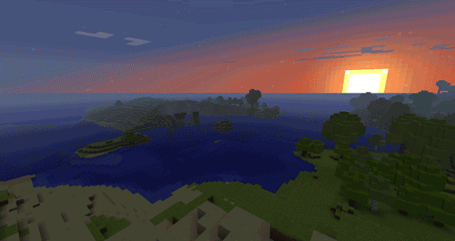

Georges Bataille
O sol, humanamente falando (ou seja, na medida que se confunde com a noção de meio-dia) é a concepção mais elevada. É também a coisa mais abstrata, dado que, nesse horário, é impossível olhá-lo fixamente. Para alcançar a descrição da noção de sol no espírito daquele que necessariamente deve o emascular, em consequência da incapacidade dos olhos, devemos dizer que esse sol tem poeticamente o sentido da serenidade matemática e da elevação do espírito. Por outro lado, apesar de tudo, o fixamos obstinadamente, isso supõe uma certa loucura e a noção muda de sentido, pois, na luz, não é mais a produção que aparece, mas o dejeto, ou seja, a combustão, muito bem expressada, psicologicamente, pelo horror que emana de uma lâmpada em arco incandescente. Praticamente o sol fixado se identifica com a ejaculação mental, a espuma nos lábios e a crise de epilepsia. Bem como o sol anterior (aquele que nós não vemos) é perfeitamente belo, aquele que olhamos pode ser considerado horrivelmente feio. Mitologicamente, o sol visto se identifica com um homem que mata um touro (Mithra), com um abutre que come o fígado (Prometeu); aquele que olha com o touro morto ou o fígado comido. O culto Mitríaco do sol tornou-se uma prática religiosa bastante difundida: colocavam-se nus em uma espécie de fossa coberta com vime de madeira sobre o qual um padre matava o touro; assim se recebia de repente uma bela ducha de sangue quente, acompanhada de urros de luta e mugidos do touro: simples meios de coletar moralmente os benefícios do sol cegante. É claro que o touro também é uma imagem do sol, mas somente morto. É o mesmo com o galo, do qual o horrível grito, particularmente solar, é sempre vizinho de um grito de decaptação. Podemos acrescentar que o sol também foi expresso, mitologicamente, por um homem se degolando e, finalmente, por um ser antropomorfo sem cabeça. Tudo isso nos faz concluir que o ponto mais alto de elevação se confunde praticamente com uma queda repentina de uma violência desconhecida. O mito de Ícaro é particularmente expressivo deste ponto de vista: ele divide claramente o sol em dois, aquele que brilhava no momento da elevação de Ícaro e aquele que derreteu a cera, determinado à deserção e a queda estridente quando Ícaro se aproximou demais.
Essa distinção entre dois sóis de acordo com a atitude humana tem uma importância particular no fato que, nesse caso, os movimentos psicológicos descritos não são movimentos desviados e atenuados em seu impulso por elementos secundários. Mas indica, por outro lado, que seria a priori ridículo tentar determinar as equivalências precisas de tais movimentos em uma atividade tão complexa como a pintura. De toda forma, é possível dizer que a pintura acadêmica correspondia à uma elevação de espírito sem excesso. Na pintura atual, ao contrário, a busca por uma ruptura da elevação trazida ao seu ápice, e de um brilho com pretenção cegante toma parte na elaboração, ou na decomposição das formas, isso é rigorosamente sensível apenas na pintura de Picasso.